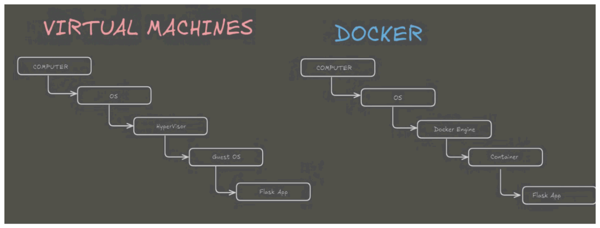
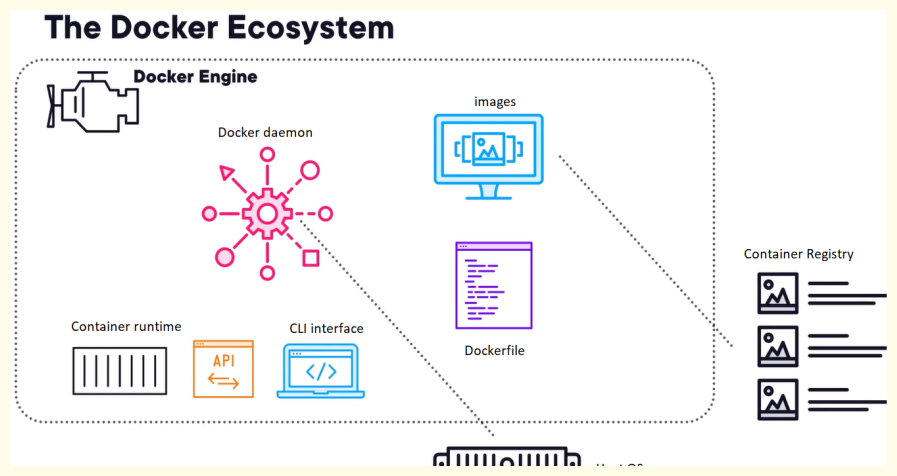

Docker
What is Docker?#
Docker is a platform for packaging, distributing, and running applications. It achieves this by enclosing applications within lightweight, portable units called containers.
The Packaging Process to distribute an application (e.g., Python code or ETL application) across different environments (QA, Prod), the code must first be packaged. Docker provides the platform to package the code and run it within isolated containers
Docker was first publicly released in March 2013, developed by Solomon Hykes and his team.
Docker's logo features a whale carrying containers, symbolizing its ability to transport and deploy applications easily from one place to another, much like ships carry physical containers across the ocean.
Docker is open-source, meaning it's free to use, though enterprise versions with added support are available.
Docker operates as a Platform as a Service (PaaS) in the cloud. It provides a platform to run your applications, similar to how a railway track (platform) allows a train (code) to run.
Docker vs. Traditional Virtualization (VMware/Hypervisor)#

| Feature | Traditional Virtual Machine (VMware/Hypervisor) | Docker (Containerization) |
|---|---|---|
| Virtualization Level | Hardware-level virtualization. A hypervisor (e.g., ESXi, VMware Workstation) is installed directly on the physical hardware or on top of an OS. | OS-level virtualization. Docker Engine runs on top of the host operating system. |
| Operating System | Each VM requires its own full guest operating system (OS) (e.g., Windows, Linux). This consumes significant storage and RAM. | Containers do not have their own full guest OS. They share the host OS's kernel. |
| Resource Allocation | Pre-allocated resources (RAM, storage, CPU) for each VM. These resources are dedicated to the VM whether it's actively using them or not. | Resources are consumed on demand. Containers take resources from the host OS as needed and release them when done. |
| Size | VMs are heavyweight (e.g., 2-4 GB for an OS, plus application data). | Containers are lightweight (e.g., 33MB for an Ubuntu image). |
| Boot Time | Slower boot times as each VM's OS needs to boot up. | Extremely fast creation and startup. |
| Portability | VMs are portable but larger and less efficient to move. | Highly portable. Containers can run on physical hardware, virtual hardware, or cloud platforms (e.g., AWS, Azure, Google Cloud). |
| Dependency Management | Manually manage dependencies within each VM's OS. | Docker automatically pulls required dependencies from Docker Hub when creating containers or images. |
| Cost | Can be more expensive due to higher resource consumption and potential licensing costs for each OS. | Cost-effective due to less resource consumption and no need for separate OS licenses. |
| Isolation | Provides strong isolation at the hardware level. | Provides OS-level isolation. Processes within a container are isolated from other containers and the host system. |
In Docker, 95% of the operating system code needed by a container is taken from the host operating system's Linux kernel (since Docker's native design is for Linux). The remaining 5% are specific files for the desired OS distribution (like Ubuntu or Kali Linux), which are part of the Docker image. This makes containers extremely lightweight and efficient.
Docker Ecosystem Components#

Docker's core functionality revolves around OS-level virtualization, also known as containerization, which is an advanced form of virtualization.
The Docker ecosystem is a set of software tools and packages that work together to create and manage containers.
Docker Client: This is where Docker users interact with the Docker Daemon (server). Users write commands in the CLI (Command Line Interface) or use REST APIs to communicate with the Daemon. A single Docker client can communicate with multiple Docker servers.
Docker Daemon (Docker Engine/Docker Server): This runs on the host operating system and is responsible for building images, running containers, and managing Docker services. It converts Docker images into running containers and executes commands from the Docker Client.
Docker Hub (Registry): This is a cloud-based storage and management service for Docker images. It stores and categorizes images.
Note
Public Registry - Images are publicly accessible to everyone (e.g., Docker Hub itself).
Private Registry - Companies use this to store images exclusively for their internal use and employees.
Docker Images: These are read-only binary templates used to create Docker containers. They are like templates or Amazon Machine Images (AMIs). An image contains all the dependencies and configurations required to run a program or application.
Note
Images are read-only - You cannot make changes directly to an image. Any modifications require creating a new image from a modified container.
Image states - When an image is running, it's called a container. When a container is stopped or paused, it becomes an image.
Docker Containers: These are running instances of Docker images. They hold the entire package needed to run an application, including the OS files (the 5% specific ones) and supported software. Containers act like virtual machines but are much lighter. Containers are built in layers. When files or software are added to a container, they form new layers on top of previous ones. This layering allows for efficient storage and reusability. You can make modifications within a container, and then create a new image from that modified container.
Docker Host: This refers to the physical hardware (laptop, server, cloud instance) on which the Docker Engine runs. It provides the environment and resources (CPU, RAM, storage) for Docker and its containers.
Advantages of Docker#
Lightweight: Containers consume minimal resources (CPU, RAM, storage) compared to VMs because they don't include a full operating system. They only include the necessary components and share the host OS kernel.
Cost-Effective: Due to lower resource consumption, Docker is cheaper than VMs. There's no pre-allocation of RAM, and no need for a separate OS installation for each application.
No Pre-allocation of RAM: Docker only allocates RAM to a container when it's needed for an application, releasing it once the task is complete. This avoids resource wastage, unlike VMs where RAM is pre-reserved.
Continuous Integration/Continuous Deployment (CI/CD) Efficiency: Docker simplifies the CI/CD pipeline. Developers build a container image, which can then be used consistently across every step of the deployment process (development, testing, production). This eliminates "it works on my machine" issues.
Portability: Docker containers can run on any physical hardware, virtual hardware, or cloud platform (AWS, Azure, Google Cloud). This flexibility ensures applications run consistently across different environments.
Image Reusability: Once an image is created (either from Docker Hub, a Dockerfile, or an existing container), it can be reused to create multiple containers or shared with other teams. This saves time and effort. Faster Container Creation: Containers can be created in seconds or milliseconds, significantly faster than VMs, which can take minutes.
Limitations of Docker#
Cross-Platform Compatibility Issues: Applications designed to run in Docker containers on Windows generally will not run on Linux Docker containers, and vice-versa.
Even within Linux distributions, for optimal performance and compatibility, it's recommended that the development and testing/production environments use the same Linux distribution (e.g., Ubuntu development should be tested/deployed on Ubuntu).
While a Linux container might run on a different Linux distribution (e.g., Ubuntu on CentOS), it might require downloading additional dependency files from Docker Hub.
Docker was originally designed for Linux, and 99% of industry usage is on Linux. While Windows 10 (Pro, Enterprise, not Home) now supports Docker with Hyper-V enabled, it still uses Linux files within the Docker Desktop tool.
Not Ideal for Rich Graphical User Interface (GUI) Applications: Docker is better suited for command-line interface (CLI) based applications rather than those requiring extensive graphical user interfaces. For rich GUI applications, VMs might be a better solution.
Difficulty Managing Large Number of Containers: While Docker Swarm and Kubernetes help, managing a very large number of Docker containers can become complex.
Dockerfile#
A Dockerfile is a text file that contains a set of instructions for Docker to automatically build a Docker image. It's a method for automating Docker image creation and ensures consistent builds.
The filename must be exactly Dockerfile, with the 'D' capitalized.
Instructions within the Dockerfile must be in capital letters.
Reusability: You can change instructions in a Dockerfile multiple times to create different new images. Each build from a Dockerfile creates a new, independent image.
Dockerfile Instructions & Commands
FROM <image>:<tag>: (Mandatory, must be the first instruction) Specifies the base image for your new image (e.g., FROM ubuntu). This is the foundation upon which your custom image will be built.
Example
FROM ubuntu
RUN <command>: Executes commands during the image build process. Each RUN instruction creates a new layer in the image.
Example
RUN echo "Subscribe Technical Guftgu" > /tmp/test_file
COPY <source> <destination>: Copies files/directories from the local machine (where the Dockerfile is located) into the Docker image.
Example
COPY test_file_1 /tmp/
ADD <source> <destination>: Similar to COPY, but has additional functionalities: Can fetch files from a URL. Can automatically extract (unzip) compressed files (e.g., .tar, .zip) into the destination directory.
Example
ADD test.zip /tmp/
EXPOSE <port>: Informs Docker that the container listens on the specified network ports at runtime. It's a declaration, not an actual publishing of the port. For public access, ports must be published (e.g., using -p option with docker run).
Example
EXPOSE 80 (for HTTP) or EXPOSE 8080 (for Jenkins).
WORKDIR <path>: Sets the working directory for any RUN, CMD, ENTRYPOINT, COPY, or ADD instructions that follow it. If the directory doesn't exist, it will be created.
Example
WORKDIR /tmp
CMD <command>: Provides defaults for an executing container. It's the primary command that runs when a container starts. There can only be one CMD instruction per Dockerfile. If multiple CMD instructions are present, only the last one takes effect.
ENTRYPOINT <command>: Similar to CMD, but it sets the main command for the container's execution. Arguments to ENTRYPOINT are always run, even if CMD is also provided. It has higher priority than CMD.
ENV <key>=<value>: Sets environment variables within the Docker image. These variables persist when the container is run.
Example
ENV MY_NAME="Bhupender Rajput"
ARG <name>[=<default value>]: Defines build-time variables that users can pass to the builder with the docker build --build-arg <name>=<value> command. (User's homework in source 67)
Building an Image from Dockerfile#
To build an image from a Dockerfile, navigate to the directory containing the Dockerfile and run the docker build command.
Command
-t <image_name>: Tags the image with a name (e.g., my_image).
. (dot): Refers to the current directory, indicating that the Dockerfile is in the current working directory.
When a Docker Image runs as a Container, the image content is held in read-only layers. The container adds a writable layer on top of the read-only layer.
-
Function: The writable layer allows the running application to write logs, create files, or make temporary on-the-spot changes within the container.
-
Isolation/Security: This design promotes isolation and security because the container cannot directly modify the underlying image layers. If the container were allowed to change the image, those changes might break the image when deployed to a production environment.
Docker Volumes#
Docker Volumes are the preferred mechanism for persisting data generated by and used by Docker containers. They are normal directories that are declared to act as volumes.
Data in volumes persists even if the container is deleted. A single volume can be shared and accessed by multiple containers simultaneously. Volumes can map a directory on the Docker host machine to a directory inside the container, allowing seamless data synchronization between them.
A directory must be declared as a volume only while creating a container or in a Dockerfile (for image creation). You cannot create a volume from an already existing container.
Data put into a shared volume by one container will be visible to all other containers sharing that same volume.
If you create an image from a running container that has a volume, the volume's content will be included in the image. However, when a new container is created from this image, the volume will act as a simple directory; it will not be shared as a volume with other containers by default. Sharing needs to be explicitly re-established for new containers.
Storage layers are required to either handle large data inputs or persist data generated by the application (e.g., database records or logs).
| Storage Type | Bind Mounts | Named Volumes |
|---|---|---|
| Purpose | Used for reading large input data from the host machine into the running container. | Used for persisting data generated by the container (e.g., SQL records). |
| Mechanism | A local host directory is mounted into the container path (available only during the container's runtime). | An isolated storage location managed by Docker (residing on the host machine but inaccessible directly by the user) is connected to a container's internal data path (e.g., /var/lib/mysql). |
| Persistence | Data is available from the host source. | Data persists even after the container is destroyed; subsequent containers can attach to the volume to retrieve the data. |
| Command (Run) | -v /host/path:/container/path (Used via Docker Compose to mount initialization scripts). |
-v <volume_name>:<container_path>. |
Methods to Create and Share Volumes#
Using Dockerfile (for image creation):
Declare the volume within your Dockerfile using the VOLUME instruction.
Example
Build the image from this Dockerfile: docker build -t my_image .
Create a container from this image: docker run -it --name container_one my_image /bin/bash
Now, /my_volume inside container_one is a volume. You can navigate into it (cd /my_volume) and create files (touch file_A file_B).
Using docker run command (direct volume declaration):
This method allows direct volume creation and mapping when launching a container.
-v /volume_two: Creates a directory named volume_two inside container_three and declares it as a volume.
-v <host_path>:<container_path>: Maps a directory on the host machine (/home/ec2-user) to a directory inside the container (/rajput). Changes in either location will reflect in the other.
Sharing Volumes Between Containers
Volumes can be shared between containers using the --volumes-from option during container creation.
Scenario: Share my_volume from container_one with container_two.
Create container_one with a volume:
Example
docker run -it --name container_one my_image /bin/bash cd /my_volume touch file_1 file_2 file_3 exit
Create container_two and share volume from container_one:
Example
docker run -it --name container_two --privileged=true --volumes-from container_one ubuntu /bin/bash
--privileged=true: Grants full read/write privileges to the shared volume.
--volumes-from container_one: Tells Docker to share all volumes from container_one with container_two.
Verify Sharing:
Inside container_two, navigate to /my_volume. You will see file_1, file_2, file_3.
Create a new file in /my_volume from container_two: touch new_file_from_two.
Exit container_two.
Attach back to container_one: docker attach container_one.
Navigate to /my_volume in container_one and list contents: ls. You will see new_file_from_two. This confirms bi-directional sharing.
Volume Management Commands
-
docker volume ls: Lists all Docker volumes on the local machine. -
docker volume create <volume_name>: Creates a new Docker volume. -
docker volume rm <volume_name>: Deletes a specific Docker volume. -
docker volume prune: Deletes all unused (not attached to any container) Docker volumes. -
docker volume inspect <volume_name>: Displays detailed information about a specific Docker volume.
Essential Docker Commands#
Here are basic and important Docker commands:
Note
Check Docker Service Status:
Output: Shows if Docker isrunning or stopped.
Note
Check Docker Info (Detailed Information):
Purpose: Provides comprehensive details about Docker installation, including OS, memory usage, root directory, etc..Note
List Docker Images:
Purpose: Lists all Docker images available on your local Docker Engine.Note
Search Docker Hub for Images:
Purpose: Searches Docker Hub for images related to the specified name (e.g.,ubuntu, jenkins, centos).
Note
Pull an Image from Docker Hub:
Purpose: Downloads a specified image from Docker Hub to your local Docker Engine. Example:docker pull jenkins
Note
Run a Docker Container:
Purpose:Creates a new container from an image and runs it.
`-it`:
`-i`: Interactive mode (keeps STDIN open even if not attached).
`-t`: Allocate a pseudo-TTY (provides a terminal inside the container).
`--name <container_name>`: Assigns a custom name to your container. If not specified, Docker generates a random name.
`<image_name>`: The name of the image to create the container from (e.g., `ubuntu`, `centos`, `jenkins`).
`/bin/bash`: Command to execute inside the container to get a bash shell.
Example: `docker run -it --name my_ubuntu_container ubuntu /bin/bash`
Note
Run a Container with Port Mapping:
Purpose:Creates and runs a container, mapping a port on the host to a port in the container, allowing external access.
`-d`: Detached mode (runs the container in the background).
`-p <host_port>:<container_port>`: Publishes (exposes) a container's port to the host.
`host_port`: The port on the Docker host (e.g., EC2 instance).
`container_port`: The port inside the container where the application is listening (e.g., 80 for HTTP, 8080 for Jenkins).
Example (HTTP server): `docker run -d --name web_server -p 80:80 ubuntu`
(Note: For the web server example, you would then need to `docker exec` into the container, install Apache, and create a webpage as shown in the source to serve content.)
Example (Jenkins server): `docker run -d --name jenkins_server -p 8080:8080 jenkins/jenkins`
(Remember to enable the `8080` port in your EC2 instance's security group for external access.)
Note
List All Containers (Running and Stopped):
Purpose: Shows all containers, including those that have exited (stopped).Note
Start a Stopped Container:
Purpose: Starts one or more stopped containers.Note
Stop a Running Container:
Purpose: Stops one or more running containers.Note
Remove a Container:
Purpose: Removes one or more stopped containers. Important: You cannot remove a running container directly. You must stop it first.Note
Attach to a Running Container:
Purpose: Connects to the main process of a running container. If the main process exits, the container will stop.Note
Execute a Command in a Running Container:
Purpose: Runs a new command in a running container, typically to get a shell. It creates a new process inside the container without stopping the main process. Example:docker exec -it my_ubuntu_container /bin/bash (to get a bash shell inside the container)
Note
Create an Image from a Container:
Purpose: Creates a new image from the current state of a running or stopped container. This is useful after making changes inside a container that you want to persist in a new image. Example:docker commit my_container updated_image